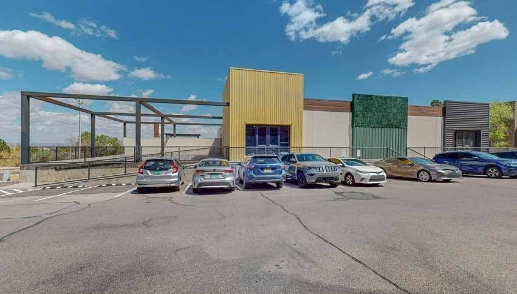
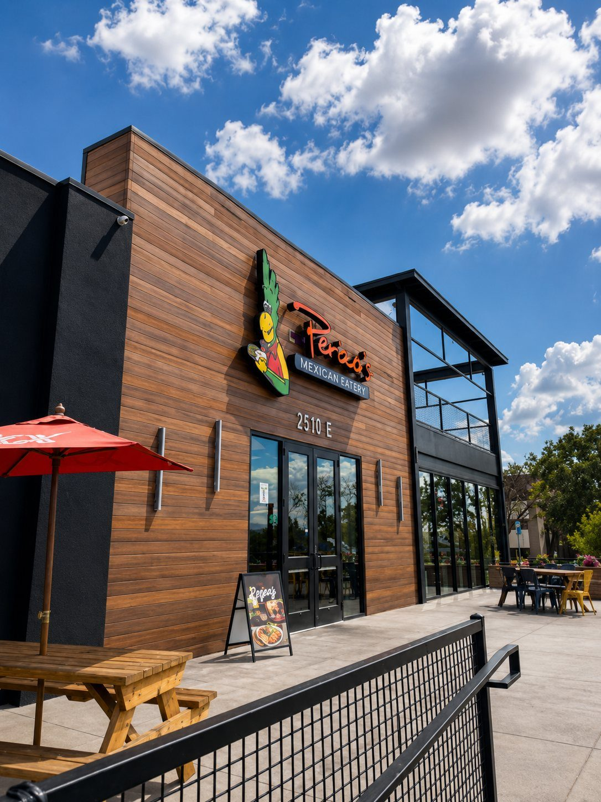
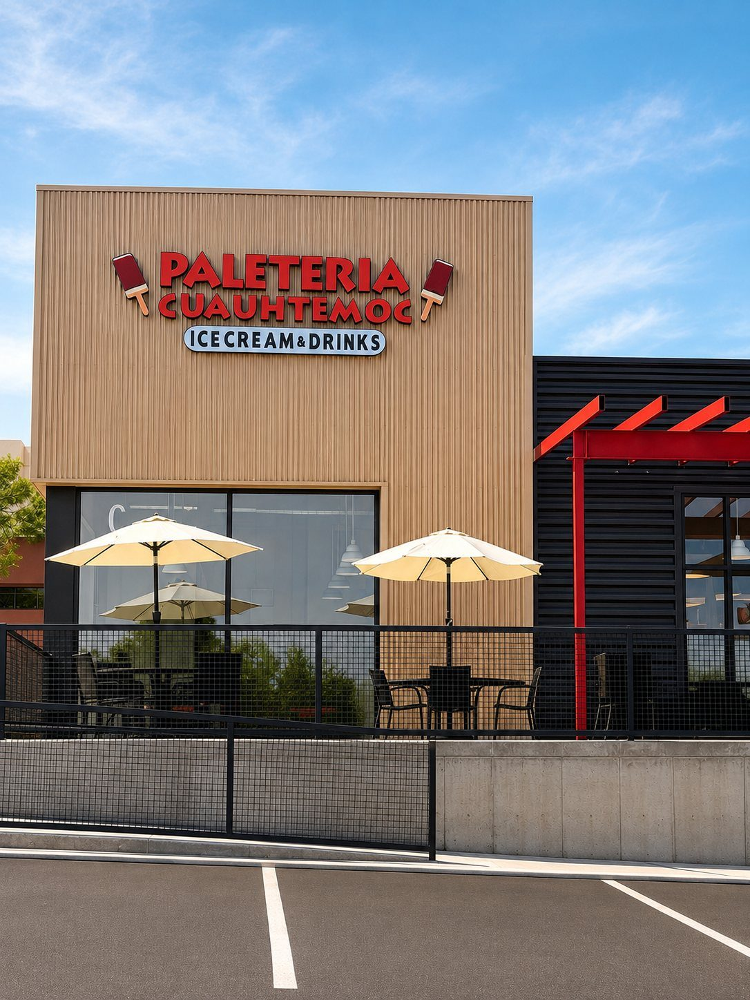
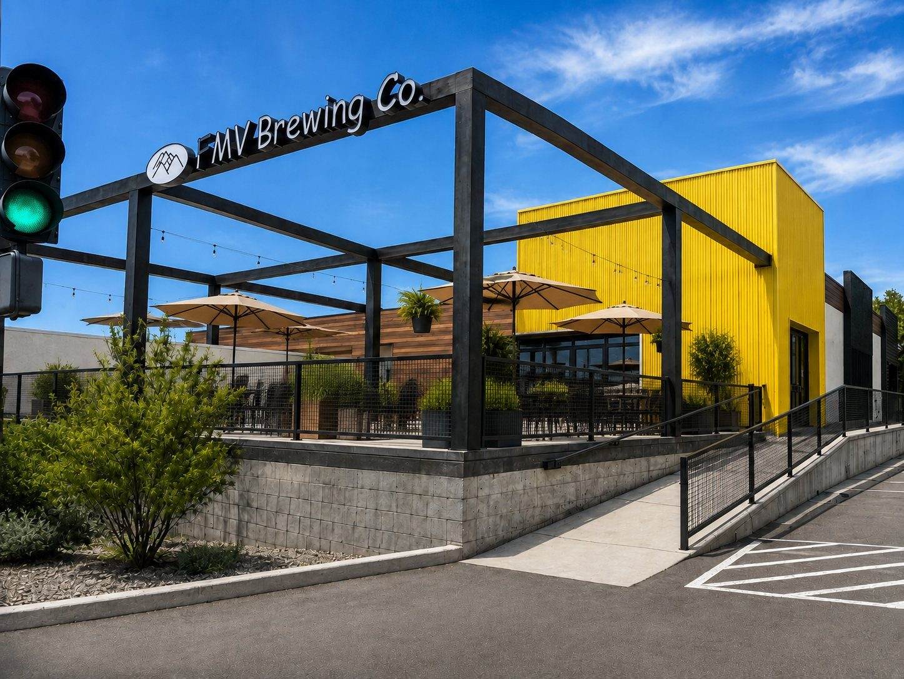

Restaurants Near UNM Hospital & the VA
The Albuquerque VA Medical Center is 0.75 miles away and UNM Hospital is close behind. Between them they employ thousands of people working shifts that don't line up neatly with lunch — and Yale Landing has free parking and a fast counter.
0.75 Miles from the VA Medical Center
Getting Here
- VA Medical Center
- 0.75 miles
- UNM Hospital
- About 2 miles
- Parking
- Free, 480 spaces
- Late
- Open until 9pm
Food that fits a real break
Perico's is counter service built for volume: order, eat, get back. Weekdays 9am to 8pm, so it covers early and late shifts as well as the middle of the day. Around a person.
For visitors and families
If you're spending a long day at the hospital, Paletería Cuauhtémoc is open until 9pm every day — paletas, aguas frescas, milkshakes and snacks, and an easy thing to bring back with you.
Somewhere to decompress
FMV Brewing upstairs pours Wednesday through Sunday with a patio looking at the mountains. Free parking either way, so you're not paying a garage on top of everything else.
What's Here
Three Places, One Parking Lot

Mexican + New Mexican
Perico's Tacos & Burritos
Family-owned since 1982. Half-pound burritos, tacos by the six-pack, stuffed sopapillas, red or green chile.

Paletas · Ice Cream · Aguas Frescas
Paletería Cuauhtémoc
Handmade Mexican paletas, shaved ice, milkshakes, elote and aguas frescas. Open until 9pm every day.

Taproom · Wine · Coffee
FMV Brewing Co.
Seven New Mexico beers on tap, cocktails on local spirits, coffee roasted in house. Upstairs with a mountain-facing patio.
Common Questions
Good to Know
Where can I eat near the Albuquerque VA Medical Center?
Yale Landing at 2500 Yale Blvd SE is 0.75 miles from the VA with three independent places to eat and free parking.
Is there food near UNM Hospital?
Yale Landing is about two miles from UNM Hospital, with counter service, patios and free surface parking.
What's open in the evening near the medical district?
Paletería Cuauhtémoc runs until 9pm daily and FMV Brewing until 9pm Wednesday through Saturday.